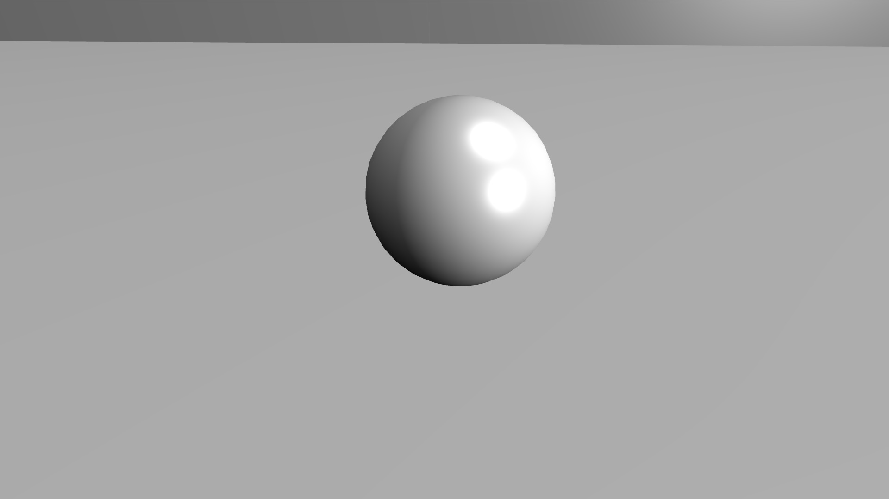
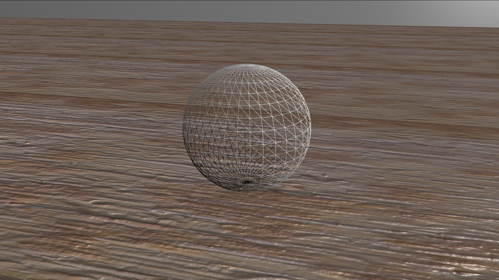
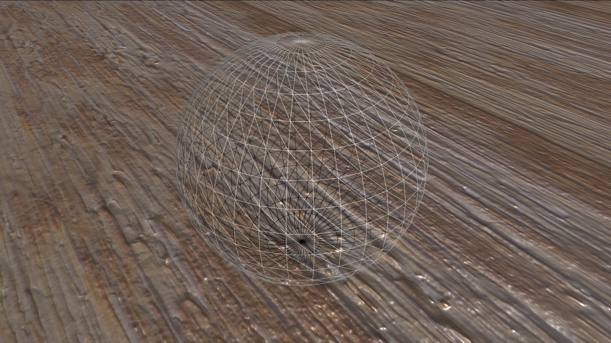

Technote d'IHM : Musée Virtuel.
Par Priscilla K. & Benoit B.
Avant-propos.
Dans le cadre de notre premier Semestre dans le cours d'interaction Homme-Machine, nous avions comme projet initial de réaliser un musée de l'interaction. Après concertation, nous avons décidés de continuer indirectement le projet en réalisant une technote (que vous êtes en train de consulter) expliquant et montrant comment créer un musée virtuel en 3D avec WebGL.
Pour cela, nous avons utilisé la librairie Babylon JS pour faciliter l'utilisation de WebGL, ainsi que Blender pour créer l'enceinte du musée virtuel.
Musée virtuel.


Le musée virtuel est un exemple d'une exposition qu'on pourrait retrouver dans un musée de l'interaction. Le thème choisi est l'espace, avec des interactions liées à ce thème. Les éléments ne redirigent nulle-part, mais on pourrait imaginer rediriger vers une autre section du site dediée à cette oeuvre, où le visiteur pourrait avoir des informations plus avancées que celles fournies par l'exposition virtuelle.
Dans cette technote, vous découvrirez comment re-créer cette salle étape par étape, et ainsi le faire évoluer vers d'autres possibilités comme :
- Un grand musée virtuel en réalité virtuelle (Babylon JS est compatible avec des casques de réalité virtuelle).
- Une partie d'une exposition d'un vrai musée impactant dans la salle où vous vous trouvez.
- Un jeu d'aventures/d'exploration comme Myst™.
- Un jeu de tir à la première personne ou à la troisième personne.
- Un portfolio interactif...
Commandes
Le musée tel quel ne peut être joué qu'avec un clavier et une souris. Cependant, on pourrait brancher une manette de Xbox 360™ filaire et jouer, ou bien utiliser un dispositif de réalité virtuelle.
- Flèches directionelles ou Z/Q/S/D : Se déplacer
- Touche E : Interagir
- Echap : Afficher le curseur.
Navigateurs compatibles
Mozilla Firefox et Internet Explorer fonctionnent parfaitement. Les autres navigateurs n'ont pas été testés.
Musée virtuel
Pour acceder au musée virtuel, cliquez sur ce lien. (La page s'ouvrira dans un nouvel onglet)
Création du squelette.
Dans un premier temps, nous allons mettre en place l'architecture du projet, et pour mon cas, voici l'organisation des fichiers et des dossiers :
-
Dossier racine :
- css: Dossier qui contiendra les feuilles de style du projet.
- app.css: CSS pour la page de l'exposition
- style.css: CSS général
- img: Dossier qui contiendra les images liés à l'habillage du site (photos, illustrations)
- icon: Dossier qui contiendra les icones pour l'habillage du site
- obj: Dossier optionnel contenant les objets 3D pour le rendu
- src: Dossier qui contiendra les fichiers sources exterieurs / librairies pour le projet
- texture: Dossier qui contiendra les textures pour le rendu
- skybox: Dossier recommandé qui contiendra les textures pour la skybox
- video: Dossier qui contiendra les vidéos pour l'exposition
- index.html: Le fichier d'acceuil pour recevoir les visiteurs
- musee.html: Le fichier qui contiendra l'exposition virtuelle
- musee.js: Le fichier qui contiendra les fonctions et algorithmes pour l'exposition virtuelle
Une fois les dossiers et les fichiers crées, l'architecture et le squelette du projet est prêt, et nous pouvons commencer à créer le projet.
Première scène.
Avant de créer la scène, assurez vous d'avoir téléchargé Babylon.js à cette adresse. Choisissez les composants que vous aurez besoin, dans notre cas, prenez OBJ dans la section LOADERS.
Dans un premier temps, nous allons préparer les fichiers musee.html et app.css.
musee.html
Nous chargeons dans le header le css (expliqué ci-dessous), on précise l'encodage (ici l'utf-8) et le titre de l'onglet.
Dans le body, babylon.js est chargé pour pouvoir faire le rendu 3D de la scène, le canvas va être le support pour le rendu, et en dernier le script dans lequel nous allons créer la scène sera chargée.
app.css
Dans le css, on pousse le canvas à occuper toute la taille disponible par le navigateur, et on met le overflow sur la valeur hidden pour éviter d'avoir la barre de défilement vertical.
musee.js
Dans un premier temps, nous allons récupérer le canvas pour pouvoir mettre le rendu de la scène dans celui-ci.
var canvas = document.getElementById("musee");
Ensuite nous allons instancier le moteur.
var engine = new BABYLON.Engine(canvas, true);
Puis on crée une fonction pour instancier la scène.
var createScene = function(){
var scene = new BABYLON.Scene(engine); //On crée une nouvelle scène
scene.clearColor = new BABYLON.Color3(0, 0, 0.2); //Couleur par défaut quand il n'y a pas d'élement (soit la couleur au fond)
//Création d'une caméra avec les paramètres : string nom_camera, Vector3 position, scene
var camera = new BABYLON.FreeCamera("FreeCamera", new BABYLON.Vector3(0, 3, -10), scene);
camera.setTarget(BABYLON.Vector3.Zero()); //On fait regarder la caméra vers l'origine de la scène.
camera.attachControl(canvas, false); //On attache les contrôles de la scène via le canvas qu'on a crée tout à l'heure dans musee.html
//Paramètres : string nom, Vector3 orientation_lumière, scene
var light = new BABYLON.HemisphericLight("light1", new BABYLON.Vector3(0, 1, 0), scene); //On crée une nouvelle lumière générale orientée vers le haut
light.intensity = .5; //On diminue un peu l'intensité de la lumière
//Paramètres : string nom, int nombre_sous-divisions, int diamètre, scene
var sphere = BABYLON.Mesh.CreateSphere("sphere1", 16, 2, scene); //On rajoute une sphère pour voir du visuel (et qui sera le centre de la salle d'exposition).
sphere.position.y = 1; //On fait monter un peu la sphère.
//Paramètres : string nom, int longueur (axe x), int largeur (axe z), int sous-divisions, scene
var ground = BABYLON.Mesh.CreateGround("ground1", 6, 6, 2, scene); //On crée un sol (petit certes) qui servira plus tard
return scene; //Et on renvoie la scène pour pouvoir l'afficher plus tard.
}
A cette étape, nous avons une scène, une caméra contrôlée par le canvas et par extension l'utilisateur, une lumière, une sphère et le sol.
Cependant, cette fonction n'est jamais appelée, donc aucune scène créée, et la scène n'a pas une boucle de rendu. Pour cela, on rajoute dans la fonction createScene avec ces lignes :
engine.runRenderLoop(function () {
scene.render();
});
Et on peut appeler la fonction en dehors de la fonction, à la fin du fichier.
var scene = createScene();
Maintenant votre première scène est créée, et devrait ressembler à ça :
On peut améliorer encore ce résultat avec ce code suivant :
window.addEventListener('resize', function(){engine.resize()});
Cette ligne permet à chaque redimentionnement de la fenêtre du navigateur d'adapter à nouveau la taille du rendu du canvas.
Félicitations, vous venez de créer votre première scène en WebGL avec BabylonJS ! Vous pouvez tester à cette adresse le résultat attendu.
Gestion des contrôles.
Dans cette section, nous allons voir comment améliorer les contrôles pour améliorer l'expérience de l'utilisateur. A l'heure actuelle, l'utilisateur peut bouger avec les flèches directionelles, et peut bouger la caméra en maintenant un clic de la souris et en bougeant celle-ci.
Seulement les contrôles au clavier et à la souris seront vus dans cette technote, cependant BabylonJS gère l'utilisation d'une manette filaire Xbox 360™, plus d'informations disponible à cette adresse.
Modification des mouvements
Dans un premier temps, nous allons modifier les déplacements de la caméra. Nous allons rajouter la possibilité de se déplacer avec les touches Z,Q,S et D.
//musee.js, après la déclaration de la camera. camera.keysLeft = [81, 37]; //Q et <- camera.keysUp = [90, 38]; //Z et Flèche du haut camera.keysRight = [68, 39]; //D et -> camera.keysDown = [83, 40]; //S et flèche du bas
Les fonctions keys combiné à une direction (en anglais) indique les touches du clavier pouvant bouger la caméra dans la direction liée.
Parmi la section des mouvements, on peut modifier la vitesse de déplacement de caméra avec cette option :
camera.speed = 0.5;
De plus, comme vous avez pu le constater, on peut se déplacer dans tous les sens dans l'espace à travers les murs (que l'on reglera plus tard dans la partie Gestion des collisions). Nous allons rajouter l'effet de la gravité sur la caméra en rajoutant cette ligne de code :
camera.applyGravity = true;
Gestion du curseur
Dans cette sous-partie, nous allons gérer le maniement du curseur. Lorsque l'utilisateur cliquera sur le rendu, celui-ci cachera le curseur et il suffira de bouger la souris pour voir.
Dans un premier temps, on rajoute la fonction qui réagit au clic souris.
//musee.js, dans la fonction createScene
var islocked = false;
scene.onPointerDown = function(evt)
{
if (!islocked) //Si la souris n'est pas bloqué...
{
canvas.requestPointerLock = canvas.requestPointerLock || canvas.msRequestPointerLock || canvas.mozRequestPointerLock || canvas.webkitRequestPointerLock || false;
//Test des requêtes de divers navigateurs
if (canvas.requestPointerLock) //Si la requête aboutie,
canvas.requestPointerLock(); //On appelle la fonction
}
//En testant ici si evt === 0, 1 ou 2, on peut déterminer quel clic a été pressé, et on peut effectuer
//des actions liées à un clic.
};
Une fois cette fonction implémentée, il reste plus qu'à créer les évènements DOM pour les navigateurs.
//musee.js, dans la fonction createScene
document.addEventListener("pointerlockchange", pointerlockchange, false);
document.addEventListener("mspointerlockchange", pointerlockchange, false);
document.addEventListener("mozpointerlockchange", pointerlockchange, false);
document.addEventListener("webkitpointerlockchange", pointerlockchange, false);
Et il ne reste plus qu'à rajouter la fonction pointerlockchange pour gérer le contrôle de la souris dans le rendu lorsque le curseur est verrouillé dans le cas.
//musee.js, à mettre avant les évènements
var pointerlockchange = function ()
{
var controlEnabled = document.mozPointerLockElement || document.webkitPointerLockElement || document.msPointerLockElement || document.pointerLockElement || false;
if (!controlEnabled)
{
camera.detachControl(canvas);
islocked = false;
}
else
{
camera.attachControl(canvas);
islocked = true;
}
};
Suite à cela, vous devriez pouvoir verrouiller le curseur et bouger votre souris librement. Cependant selon le navigateur et l'IDE utilisé, il se peut qu'il y ait des problèmes de mouvement de souris (particulièrement avec Brackets + Google Chrome).
Par ailleurs, la sensibilité du mouvement de la caméra peut être reglée avec cette ligne :
camera.angularSensibility = 3500;
Plus la valeur est elevée, moins la caméra tournera vite. Et cela conclut la partie sur la gestion et modification des contrôles.
Création de l'enceinte du musée.
Dans cette partie, nous allons créer l'enceinte du musée, et plus précisément les murs. Dans un premier temps, nous pouvons agrandir le sol pour avoir une plus grande surface.
Pour créer les murs, nous pouvons créer un cube par mur, ce qui peut être long et fastidieux, puisqu'il faut créer chaque cube, le place, et modifier ses dimensions. Ou nous pouvons charger un objet en 3D que nous avons pu créer à l'aide d'un logiciel de CAO (Conception Assisté par Ordinateur) comme Blender™ ou Maya™.
On partira sur une enceinte crée dans un objet 3D au format .obj, que vous pourrez récuperer ici à ces liens : partie 1 et partie 2.
Vous aurez besoin de l'option OBJ LOADER lorsque vous avez téléchargé Babylon JS sur la page de téléchargement.
Le fait qu'on charge un objet, le moteur doit charger l'objet avant que le rendu soit effectué. Donc nous devons rajouter un loader, qui est un Asset Manager.
var loader = new BABYLON.AssetsManager(scene);
Une fois le loader crée, on doit rajouter une tâche de chargement de Mesh (d'objet 3D) pour le loader, avec cette commande :
var salle = load.addMeshTask("nom", "", "obj/", "salle.obj");
Suite à cela, on s'assure que le chargement a réussi, et suite à cela, on peut effectuer des opérations sur l'objet (comme le déplacer) :
//musee.js, dans createScene, après la déclaration de var salle
salle.onSuccess = function(t) {
t.loadedMeshes.forEach(function(m) { //On édite ici chaque maillage de l'objet
m.position.y = 2.5; //Pour le monter en hauteur
m.position.x = 10; //Et on le décale un peu pour que quand on commence, il soit bien placé.
m.checkCollisions = true; //Ajout de la détection des collisions, expliqué plus tard.
});
};
Une fois les actions sur le maillage et l'objet ont été réalisés, on peut lancer le chargement et déclencler les tâches enregistrées dans le loader.
loader.load();
Le fait qu'on utilise un loader et un assetmanager implique un préchargement des ressources avant de faire le rendu, donc on ne peut pas lancer le rendu de la scène dès que la page est chargée. Il faut donc faire le rendu une fois que le loader a fini de charger les ressources. Il faut donc adapter la boucle de rendu :
loader.onFinish = function(){
engine.runRenderLoop(function(){
//Mettre les éléments de rendu ici.
//...
});
};
Avec l'ajout de ces lignes, le rendu se lancera qu'une fois que les taches sont réalisées (donc une fois que l'objet a fini de charger). Suite à cela, nous sommes prêts à voir plus en détail le fonctionnement du système de collisions.
Gestion des collisions.
Comme vous avez pu le constater, en bougeant la camera traverse les murs et le sol. Dans cette section, nous allons remédier à ce problème et gérer le système de collision dans le rendu.
Comme vu dans la section précédente, lors de l'édition et des meshes des murs de la salle, la ligne m.checkCollisions = true permet d'activer les collisions. Le fait d'appliquer ça empêche aux objets ayant cette caractéristique sur vrai de se rentrer dedans et donc de rester dans la salle dans le cas de notre musée.
Pour chaque élément, il faudra mettre l'attribut checkCollisions égal à true.
Collisions liées à la camera
Il existe une fonction qui permet de détecter si un objet a une collision avec un 2e objet, ce qui peut être pratique pour tester si un objet est dans une zone précise, ce qui sera utile pour l'exposition. Le problème c'est que la hitbox de la caméra n'est pas compatible avec cette fonction, il faudra donc rajouter une sphere de collision.
Dans un premier temps, on crée une nouvelle sphere.
var hitbox = BABYLON.Mesh.CreateSphere("hitbox", 16, 1, scene);
Ensuite, nous mettons la sphere au même endroit que la camera (si la camera a changé de position de départ, qui se fait avec la fonction objet.position = new BABYLON.Vector3(x, y, z);). Une fois cette étape réalisée, on met cette sphère en enfant de la caméra pour qu'elle dépende des mouvements de la caméra, et donc de sa position.
hitbox.parent = camera;
Il ne manquera plus qu'à rajouter les zones de détection (avec checkCollisions sur false pour ces zones ET pour la hitbox), et vous pourrez faire des zones de trigger pour faire des évènements scriptés ou dans des lieux spécifiques, qu'on mettra en pratique dans la partie Exposition. Maintenant que nous avons la salle d'exposition et une physique normale, avec des contrôles adaptés pour le plus grand nombre, nous pouvons maintenant rajouter des textures pour rendre le musée plus agréable à visiter.
Ajout des textures et des lumières.
Actuellement, notre musée ressemble à des salles sans textures, et une lumière basique, qui ressemble à cela :
On peut rajouter des textures, pour rendre la salle moins monotone est plus agréable, pour passer de l'image précédente à l'image suivante :
Dans un premier temps, nous allons créer un nouveau matériau qui sera le conteneur de la texture, et qu'on appliquera aux objets que l'on souhaite. Commençons par déclarer le matériau :
var mat_sol = new BABYLON.StandardMaterial("sol", scene);
Ensuite, nous allons rajouter la texture au matériau :
mat_sol.diffuseTexture = new BABYLON.Texture("texture/sol.jpg", scene);
Et nous pouvons appliquer le matériau aux objets souhaités :
ground.material = mat_sol;
Options supplémentaires
On peut rajouter un effet que l'objet est en 3D en rajoutant une texture bump avec une texture "normal", qui donnerait cet effet (à gauche sans, à droite avec) :

Le fait de rajouter ce type de texture permet de simuler une profondeur sans modifier l'objet, on ne joue qu'avec les normales (les réflections de lumière). Voici à quoi ressemble un texture avec sa normal map.
Après on peut répéter la texture dans le cas où l'objet est trop grand (et donc éviter d'avoir un résultat qui donne un sol pixélisé et approximatif). Pour cela on peut rajouter ces lignes pour résoudre ce problème :
mat_sol.diffuseTexture.uScale = 16.0 * 1.5; mat_sol.diffuseTexture.vScale = 16.0; mat_sol.bumpTexture.uScale = 16.0 * 1.5; mat_sol.bumpTexture.vScale = 16.0;
Le uScale et vScale permet de savoir le nombre de fois où on répète la texture sur le materiau horizontalement et verticalement (dans leur ordre respectif).
On peut également modifier la valeur de l'alpha pour faire des matériaux transparents, comme du verre par exemple.
monMateriau.alpha = 0.5;
Ou même afficher uniquement l'objet en mode "fils de fer".
materiauFilFer.wireframe = true;

Textures vidéo
BabylonJS gère également les textures animés si on met une vidéo, idéal pour simuler un écran TV, ou pour rajouter une présentation vidéo dans le cas de notre musée. Pour l'exemple, nous allons mettre une vidéo de la présentation de la faculté des sciences de Montpellier.
Pour cet élément, il est recommandé d'utiliser un mesh type Plane, cependant ce type de texture fonctionne avec tous les objets. Dans premier temps, créons une nouvelle texture.
var videoMat = new BABYLON.StandardMaterial("vidFac", scene);
Ensuite, nous rajoutons la ou les vidéos (vous pouvez mettre autant de vidéos dans le tableau, elles se joueront à la suite).
videoMat.diffuseTexture = new BABYLON.VideoTexture("videosFac", ["texture/video/faculte.mp4"], scene, false);
Puisque j'utilise des plans comme surface pour la vidéo, on va activer l'option pour voir la texture même en la regardant derrière (puisqu'un plan ne peut être vu que d'un seul côté à la base).
videoMat.backFaceCulling = false;
Ensuite nous allons régler la couleur émis par la texture, d'abord la couleur habituelle quelque soit la lumière, qu'on va mettre à la valeur maximum pour que quelque soit la luminosité, la vidéo ne soit pas impactée.
videoMat.diffuseColor = new BABYLON.Color3(1, 1, 1);
Après, nous allons régler la couleur dite specular, soit la couleur de reflet, que nous allons mettre à 0 pour éviter les reflets lors du visionnage sur le plan.
videoMat.specularColor = new BABYLON.Color3(0, 0, 0);
On peut ensuite appliquer le matériau à l'objet choisi, et faire jouer la ou les vidéos en boucle.
videoMat.diffuseTexture.video.loop = true;
Bravo, vous savez désormais manier les textures de BabylonJS !
Vues modales.
Dans cette section, nous allons voir ensemble les vues modales, qui est un module HTML, et qui feront office d'interface avec l'utilisateur. Un exemple de vue modale est quand vous cliquez sur une des images de cette page et vous verrez un visionneur de photo modal. Cet élément n'est pas lié à BabylonJS, mais nécéssaire pour la mise en l'exposition virtuelle.
Pour cela, nous allons utiliser et suivre le tutoriel de W3C Schools. Dans un premier temps, nous allons rajouter ces lignes au fichier app.css
.modal {
display: none; /* On le cache par défaut */
position: fixed; /* Sa position sera fixe */
z-index: 1; /* Et en première position */
left: 0;
top: 0;
width: 100%;
height: 100%;
overflow: auto;
background-color: rgb(0,0,0); /* La couleur d'arrière-plan... */
background-color: rgba(0,0,0,0.4); /* ...avec de la transparence si supporté par le navigateur */
-webkit-animation-name: fadeIn; /* Et on lance l'animation (voir ci-dessous) */
-webkit-animation-duration: 0.4s;
animation-name: fadeIn;
animation-duration: 0.4s
}
/* Modal Content */
.modal-content {
position: fixed;
bottom: 0;
background-color: #fefefe;
width: 100%;
-webkit-animation-name: slideIn;
-webkit-animation-duration: 0.4s;
animation-name: slideIn;
animation-duration: 0.4s
}
/* The Close Button */
.close {
color: white;
float: right;
font-size: 28px;
font-weight: bold;
}
.close:hover,
.close:focus {
color: #000;
text-decoration: none;
cursor: pointer;
}
.modal-header {
padding: 2px 16px;
background-color: #5cb85c;
color: white;
}
.modal-body {padding: 2px 16px;}
.modal-footer {
padding: 2px 16px;
background-color: #5cb85c;
color: white;
}
/* Add Animation */
@-webkit-keyframes slideIn {
from {bottom: -300px; opacity: 0}
to {bottom: 0; opacity: 1}
}
@keyframes slideIn {
from {bottom: -300px; opacity: 0}
to {bottom: 0; opacity: 1}
}
@-webkit-keyframes fadeIn {
from {opacity: 0}
to {opacity: 1}
}
@keyframes fadeIn {
from {opacity: 0}
to {opacity: 1}
}
Suite à cela, nous allons rajouter du contenu modal dans le fichier musee.html. Il doit se trouver entre le canvas et le chargement du script musee.js.
Mise en place de l'exposition virtuelle.
Conclusion.
Boosté par le w3.css